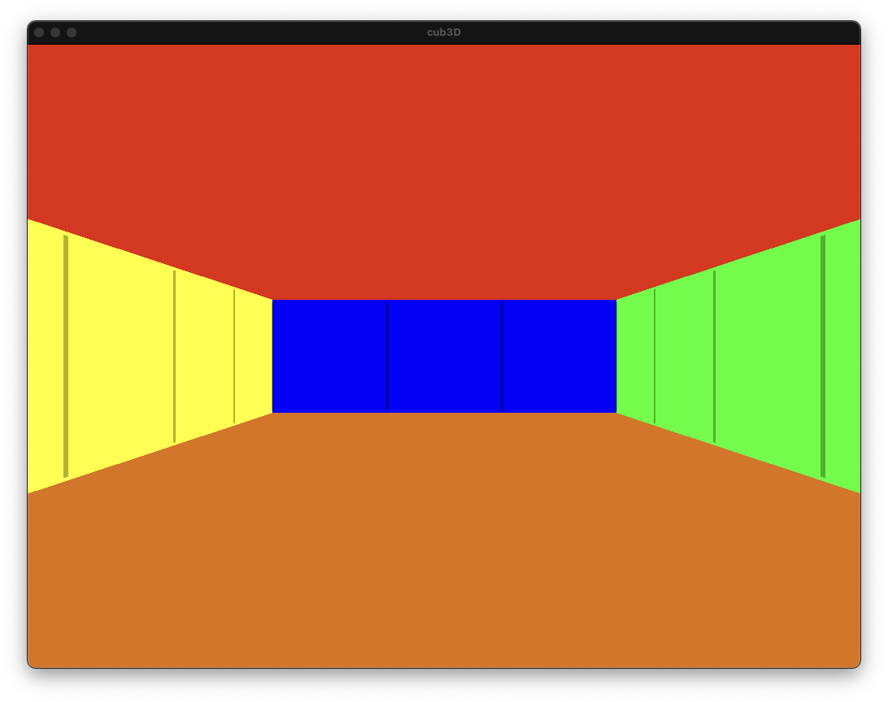

cub3D ガイド
🎮 作るもの

3D の迷路を歩き回れるゲーム を C 言語で作るプロジェクトです。 プレイヤー視点で前進・回転ができ、4 方向の壁には別々のテクスチャが貼られます。
🎬 実際の動き
プレイヤーが回転・前進すると、画面の壁の位置や大きさがリアルタイムに変化します。 これが レイキャスティング の仕組みです。
動画をクリックすると その場で一時停止（再クリックで再生再開）
📖 全体目次（クリックで各ページへ）
| # | ページ | 何が分かる？ | 目安時間 |
|---|---|---|---|
| — | cub3D ってどんなプロジェクト？ | 全体像・遊び方・仕組みの触り | 3分 |
| 00 | 🗺️ プログラム全体の流れ | main.c, init.c, render の繋がり | 10分 |
| 01 | 📦 概要とビルド | ファイル構成、Makefile、操作方法 | 10分 |
| 02 | 📝 パーサー | .cub ファイルをどう読むか |
15分 |
| 03 | 🔦 レイキャスティングとは | 3D 描画の概念（懐中電灯の例え） | 10分 |
| 04 | 📐 DDA アルゴリズム | 格子を効率よく渡る方法 | 10分 |
| 05 | 📷 カメラと魚眼補正 | 光線の向き・画面端の歪み補正 | 10分 |
| 06 | 🎨 レンダリング | テクスチャを壁に貼る方法 | 15分 |
| 07 | 🎮 入力処理 | キー入力・移動・回転 | 15分 |
| 08 | 🧹 メモリ管理 | リークを防ぐ方法 | 10分 |
| 09 | 🐛 実際のバグと修正 | 遭遇した 4 つのバグと直し方 | 15分 |
| 🎓 | 📋 評価対策 | ディフェンスで聞かれること | 20分 |
| 📚 | 用語集 | .cub、構造体、DDA 等の用語解説 |
辞書代わり |
読み進める順番
初めての方は 01 → 02 → 03 → ... と番号順 に読むのがおすすめ。 特に 03 レイキャスティング が最重要なので、ここに時間をかけてください。
cub3D ってどんなプロジェクト？
3D の迷路を歩き回れる簡易ゲームを作るプロジェクト です。
1992 年の名作 Wolfenstein 3D のような、
3D 迷路の中を一人称視点で歩き回れるプログラムを、
.cub という独自形式のマップファイルから読み込んで描画します。
+--- 画面イメージ ---+
| |
| 壁が見える 3D | ← プレイヤーから見た壁
| (テクスチャ付き) |
| |
+--------------------+
| 天井色 / 床色 |
+--------------------+
W/A/S/D で移動、← / → で回転
「魔法のような 3D 描画」 を、実は 2D の数学 だけで実現する、 という仕組みを学ぶのがこの課題の面白いところです。
このガイドで学ぶこと
- 🔦 レイキャスティング — 3D っぽく見せるための描画アルゴリズム
- 📚 miniLibX — 42 が提供する最小限のグラフィックライブラリ
- 📝 パーサー作り —
.cubファイルを読んで構造体に変換 - 🎮 イベントループ — キー入力で画面を更新する仕組み
- 🎨 テクスチャマッピング — 壁に画像を貼る方法
- 🧹 メモリ管理 — リークなく確実に解放
どう動くの？（ざっくり）
[.cub ファイル]
map: 1111
1001
10N1 ← N はプレイヤーの初期位置
1111
NO: textures/north.xpm
SO: textures/south.xpm
...
|
v
[パーサー] → マップデータを読み込む
|
v
[メインループ]
1. プレイヤーの位置と向きを取得
2. 画面の横幅分、光線（ray）を飛ばす
3. 光線が壁にぶつかった距離を計算
4. 距離から壁の高さを決めて描画
5. キー入力があれば位置/向きを更新
6. 1 に戻る
これが レイキャスティング の仕組み。 「2D の数学」で「3D っぽい絵」を作る、というのがポイント。
課題仕様のポイント
| 項目 | 要件 |
|---|---|
| 入力 | ./cub3D <path_to_map.cub> |
| 実行環境 | miniLibX (macOS / Linux) |
| 言語 | C |
| コンパイル | -Wall -Wextra -Werror |
| 禁止 | norminette NG、メモリリーク |
| 必須機能 | W/A/S/D 移動、矢印キー回転、ESC 終了、× ボタン |
| テクスチャ | NO / SO / WE / EA の 4 方向別 |
| 色指定 | 床 (F) と天井 (C) の RGB |
評価（ディフェンス）のポイント
以下が評価でチェックされます:
- マップファイルの異常系 — 開いたマップ、プレイヤー 2 人等でクラッシュしないか
- メモリリーク — valgrind / leaks で確認
- 操作性 — W/A/S/D と矢印キーが仕様通りに動くか
- テクスチャ方向 — 北の壁には NO テクスチャが貼られているか
- コードの説明 — レイキャスティングのアルゴリズムを説明できるか
ディフェンスで一番聞かれるのは？
「レイキャスティングのアルゴリズムを説明してください」
DDA（Digital Differential Analyzer）という格子を渡るアルゴリズムを 使って、光線がどの壁にぶつかるかを計算します。 詳しくは 03. レイキャスティング を参照。
参考リソース
- Lode's Computer Graphics Tutorial — Raycasting — 定番の参考資料
- 42 miniLibX documentation (harm-smits) — miniLibX API リファレンス
▶️ 次に読むページ
次は 📦 01. 概要とビルド から始めましょう。